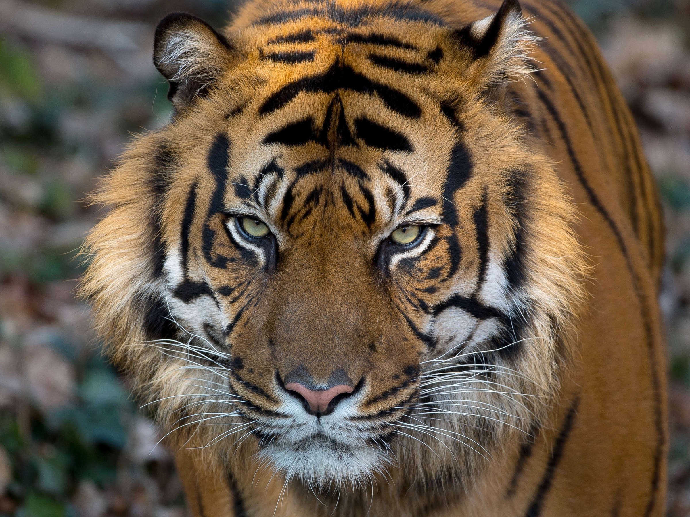

Die Grösse des Streifgebiets hängt davon ab, wie viele Beutetiere es dort gibt. In den letzten 150 Jahren
schrumpfte der Lebensraum der Tiger um fast 95%. Strassenbau, die Abholzung der Wälder und ihre kommerzielle
Nutzung treiben sie in die Enge. Da TIger auch immer weniger Nahrung finden, müssen sie auf ihren Beutezügen
immer
weitere Strecken zurücklegen.So besetzen einzelne Tigermännchen in den wildarmen Wäldern des russischen Fernen
Ostens bis
zu 1000km^2. Die Reviere der Weibchen sind ca 488km^2 gross. Im "Normalfall" benötigen Tigermännchen 30 bis
100km^2
und weibchen 10 bis 40 km^2.
Tiger sind auch für Wilderer eine begehrte Beute, denn der illegale Handel mit Tiger-Proudunkten ist ein
lukratives
geschäft. So erzielen ihre Felle am Schwarzmarkt Preise bis zu 15.000 Dollar. Der Preis für ein Kilogramm
Tigerknochen
stieg nach dem nationalen Handelsverbot in China von knapp 800 auf 6.500 US-Dollar. Heute gilt ein weltweites
Handelsverbot
für Tigerteile und Tiegerprodukte, allerdings ist der Handel auf dem Schwarzmark weiterhin ein grosses Problem.